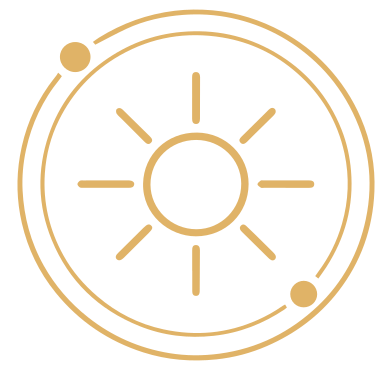

My Astrology App
Ingresa tus datos de nacimiento para consultar la API y visualizar una carta natal de forma clara y elegante.
Datos de nacimiento
Puedes escribir una ciudad para autocompletar latitud, longitud y zona horaria, o llenar esos campos manualmente.
Vista previa de la carta natal
Esta rueda muestra la distribución visual de los signos, los ejes principales y los cuerpos celestes calculados a partir de tus datos de nacimiento. Pasa el cursor sobre los símbolos para ver su nombre y referencia.
Resumen principal
Este bloque muestra tres referencias básicas de la carta: el Sol, la Luna y el Ascendente.
Planetas y puntos
Aquí verás en qué signo está cada astro o punto importante, en qué grado exacto se encuentra y, si lo deseas, podrás desplegar sus datos técnicos.
Aquí mostraremos los astros devueltos por la API.
Ejes principales
Los ejes marcan puntos clave de la carta, como Ascendente, Descendente, Medio Cielo y Fondo del Cielo.
Aquí mostraremos los ejes principales.
Casas
Las casas dividen la carta en 12 áreas. Aquí mostramos la cúspide de cada casa, es decir, el signo y el grado donde empieza cada una.
Aquí mostraremos las 12 casas astrológicas.
Aspectos
Los aspectos son relaciones angulares entre planetas y otros puntos de la carta. Ayudan a entender cómo interactúan entre sí.
Aquí mostraremos los aspectos encontrados entre los astros.
Preguntas frecuentes
¿Qué es una carta natal?
Una carta natal es una representación del cielo en el momento exacto de tu nacimiento. Muestra la posición del Sol, la Luna, los planetas y las casas astrológicas.
¿Qué representan los planetas?
Cada planeta simboliza una función distinta dentro de la astrología. Por ejemplo, el Sol representa la identidad, la Luna el mundo emocional, Mercurio la comunicación y Venus los vínculos.
¿Qué son las casas astrológicas?
Las doce casas representan distintas áreas de la vida, como relaciones, trabajo, hogar, propósito personal y desarrollo interior.
¿Qué son los aspectos?
Los aspectos son relaciones angulares entre planetas. Ayudan a entender cómo interactúan las energías dentro de una carta natal.
¿Qué tan precisa es esta carta?
La carta se calcula con datos astronómicos y posiciones planetarias precisas. La interpretación depende del enfoque astrológico y del contexto personal.